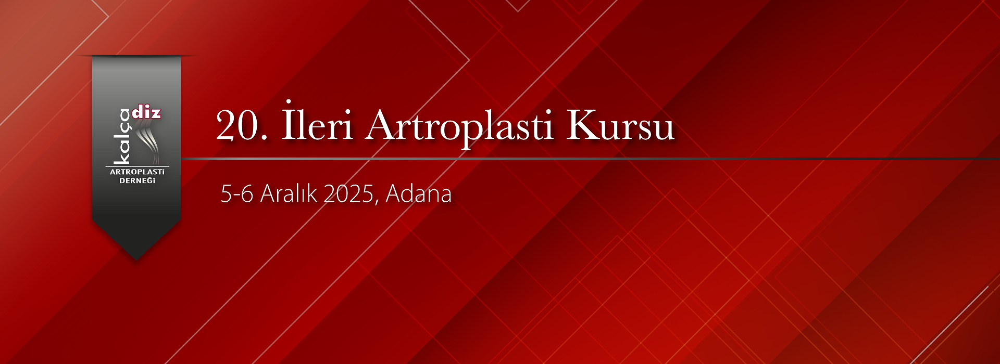

Değerli Meslektaşlarımız,
Kalça Diz Artroplasti Derneği olarak 05 - 06 Aralık 2025 tarihinde Acıbadem Adana Ortopedia Hastanesi’nde 20. İleri Artroplasti Kursu’nu gerçekleştireceğiz. “Kalça Artroplastisi” konusunu ileri düzeyde tartışacağımız iki gün sürecek toplantımızda primer total kalça protezi uygulaması, özellikli kalça protezi uygulaması ve revizyon kalça protezi konularını ileri seviyede ayrıntılı olarak teorik ve canlı cerrahiler zemininde, interaktif tartışma imkanı bulacağız.
Amacımız, temel kalça artroplasti eğitimi almış olan katılımcılarla ameliyata hazırlık, cerrahi sırasında ve cerrahi sonrasında ki ayrıntıları tartışma ve çözümleri değerlendirme imkânı yaratmaktır.
Robotik primer direkt anterior total kalça protezi, özellikli zor kalça protezi ve revizyon kalça protezi ameliyatları canlı olarak ameliyathaneden naklen yayınlanacak, katılımcıların interaktif olarak soruları yanıtlanacak ve tartışılacaktır.
Düzenleyeceğimiz 20. İleri Artroplasti Kursu’nda sizleri de aramızda görmek bizi mutlu kılacaktır.
KADAD Başkanı Prof. Dr. ibrahim Tuncay
Kurs başkanı: Prof. Dr. Bülent Özkurt
Kurs Sekreteri: Op. Dr. Remzi Çaylak
İlginiz için teşekkür ederiz. Kurs kontenjanımız dolmuştur.


Resim Galerisi